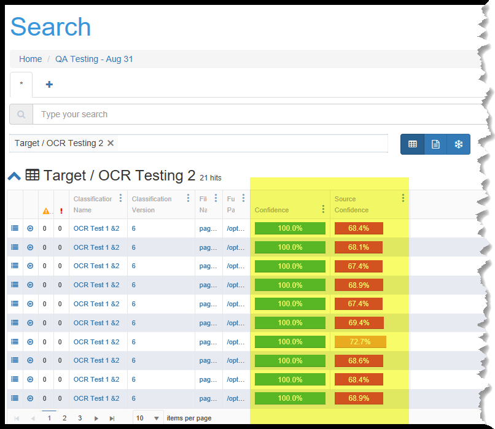
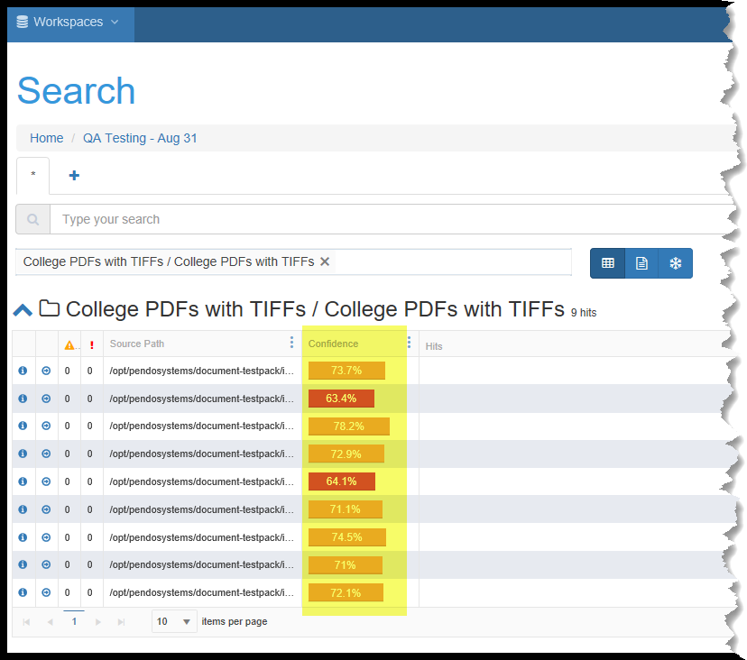
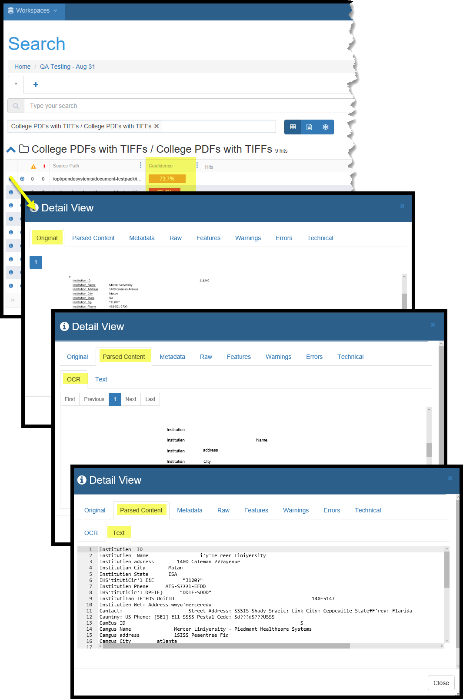
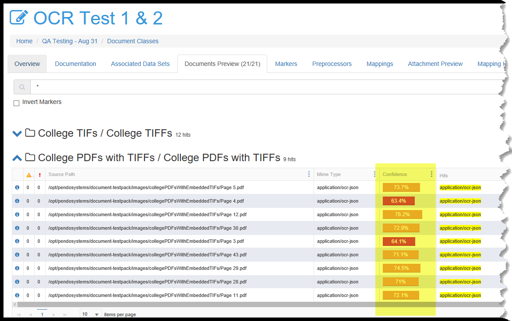
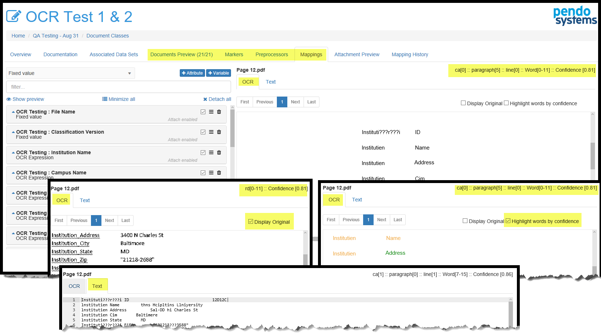
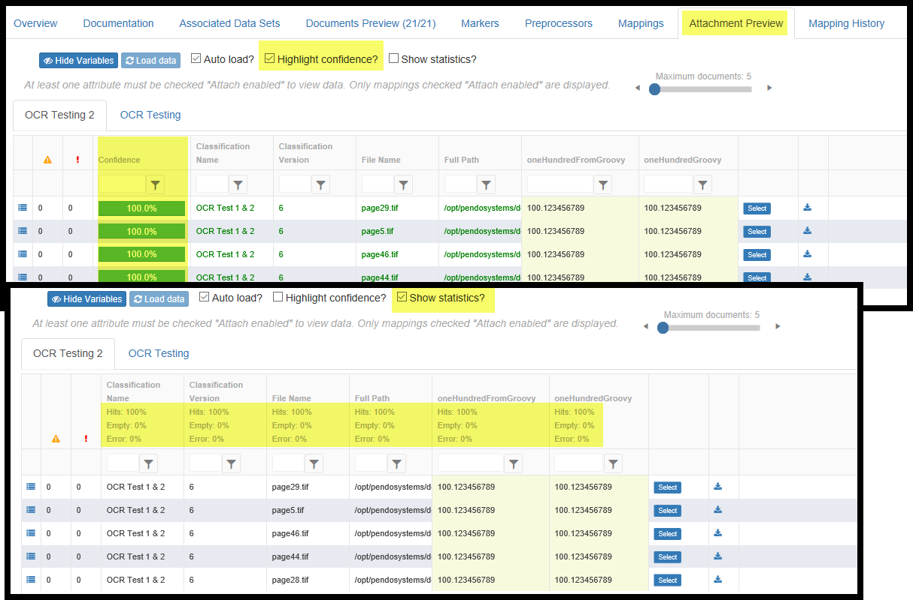

OCR related screens and Confidence numbers
Introduction
The OCR utility provided by the platform is being migrated to the User Interface. This Release reflects the first major step in the process. As with all parts of the Platform, functionality will be improved with subsequent releases. For now, you may wish to work with Client Services, who will be happy to assist you in this new user-accessible functionality.
We make use of Confidence ratings and some screens have been modified with new tabs or columns in order to accommodate OCRed files.
Confidence ratings
For documents that have been OCRed, word level confidence is the probability that the imaged word was OCRed with no errors. Document level confidences is simply the aggregation of the confidence at the word level.
For non-OCRed data (e.g. databases, Word, Excel, some PDFs), you will see a confidence of 100% since the platform will always correctly bring in the data from these other source types.
Target Entity Searches
Target Entity searches now display one or two new columns.
- Confidence is always shown. Source Confidence is shown only for Target Entities that were populated from OCRed sources.
- Confidence reflects the platforms’ aggregate confidence in the contents of the Attributes of the Entity.
- Source Confidence indicates the platforms’ confidence in the accuracy of the transfer of data from the source of the Entity’s data. Each row’s data could be from a databases’ fields or from Attachments from one or more Document Classes.

Document Set Searches
Document Set searches now display one new column.
Confidence reflects the platform’s confidence in the correct parsing of data from the original source to the indexed metadata. This only relevant when reviewing OCRed files.

Search screen Detail View
The first ‘i’ icon on a search grid pops up a Detail View as is standard. However, for OCRed files, the first tab is ‘Parsed Content’.
- This tab has two sub-tabs:
- OCR - which shows the original image of the document.
- The Text - which shows the results of the OCR process.

Document Class screens
Document Class Grid
the Document Class grid shows Confidence the same way that a Search of a Document Set does. Please see above.

Document Preview, Markers and Preprocessors screens
- The Document Preview tab Confidence column reflects the platform’s aggregate confidence in the parsing of data from the original source file to the indexed metadata. This is most relevant when reviewing OCRed files.
- These same tabs are shown in the Markers, Preprocessors and Mappings tabs when looking at a document preview.
OCR - which shows the results of the OCR process. There are two options on this tab ‘Display Original’ which shows the original image of the document before any processing took place. ‘Highlight Words by confidence which reflects word by word visualization of the platform’s confidence in correctly parsing that specific text from the original to the indexed metadata. Text - which shows the results of the parsed OCR data.

Attachment Preview Grid
- In the Attachment Preview tab you have an option to Highlight Confidence. This number reflects the aggregate confidence for this row of data that the mapping logic has worked correctly in extracting the data from the source file.
- You may also Show Statistics for each column. Columns are either an Attribute or a Variable).
